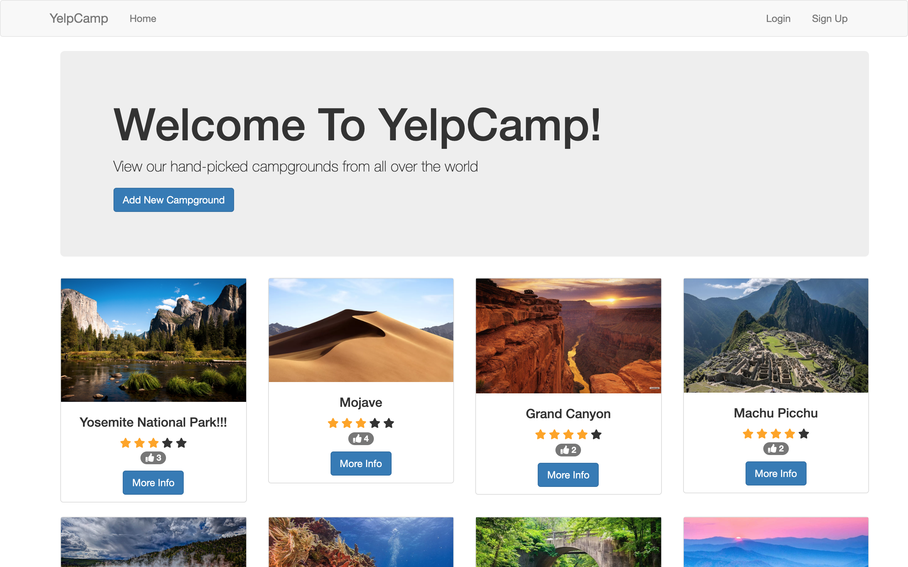
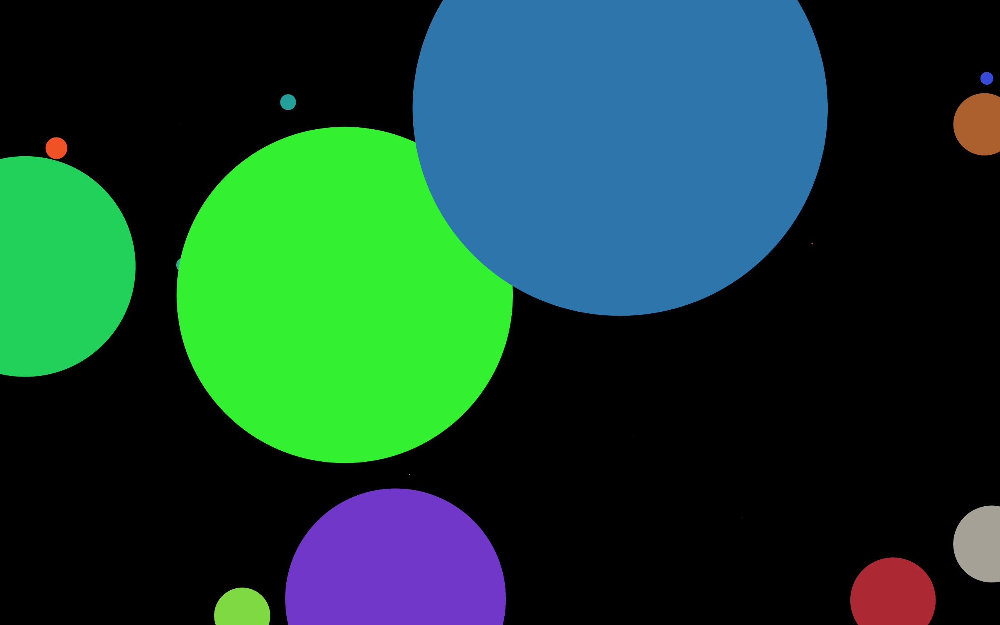
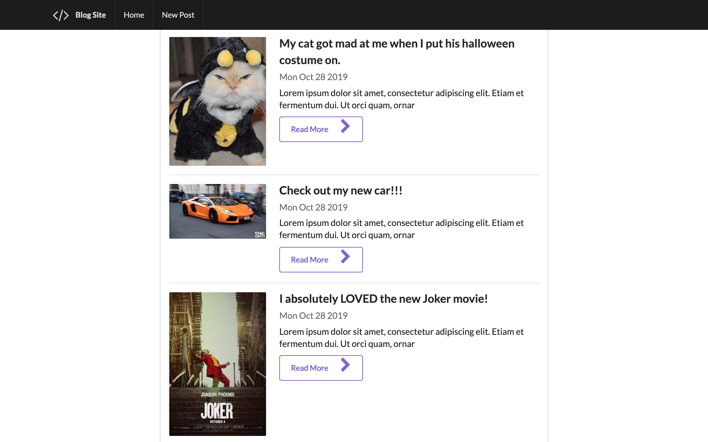
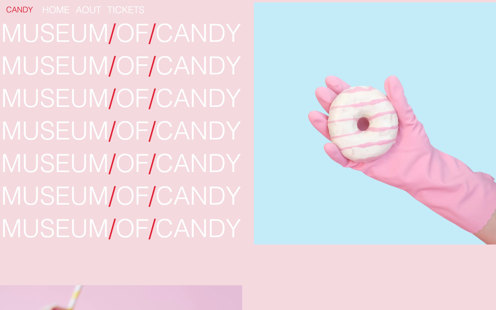
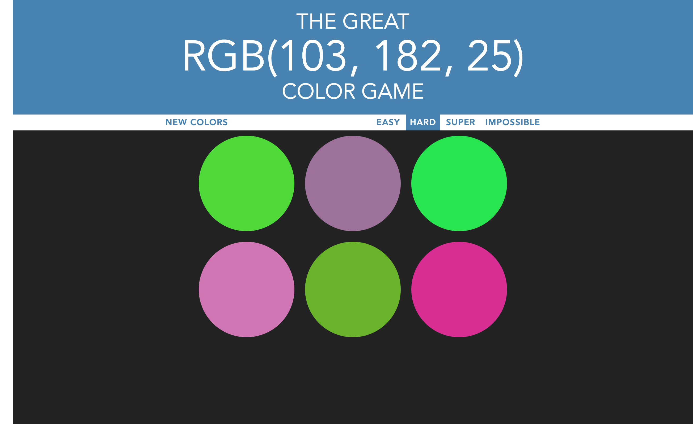

Owen Velasco
I am a software developer who is passionate about writing code, learning new technologies, and working outside of my comfort zone.

Description: this express app uses a database for the campgrounds it incorporates user authentication/authorization it includes sign-up and log-in feautures. In addition, it includes a rating, comments, and likes system.
Technologies Used: HTML5, CSS3, BootStrap, JavaScript, Express, & Mongoose.

Description: This game is a clone of the PatATap web-app. It will generate a random circle on the screen and then decrease it in size and increase in hue all while playing a unique sound assigned to each of the letter keys.
Technologies Used: HTML5, CSS3, JavaScript, PaperJS, & HowlerJS libraries.

Description: This blog application allows users to make new, edit, and delete posts. This uses the semantics CSS framework for styling. It incorporates method override, sanitization, and all of the RESTful routes.
Technolgoies Used: HTML5, CSS3, Semantics, & JavaScript.

Description: A static website for a fictional Museum. The website is scallable for large, md, and small, and extra-small screens.
Technologies Used: HTML5, CSS, & BootStrap4

Description: This is a color guessing game with three difficulites. The logic assigns a winning RGB value and then assigns 3,6,9 or 12 random RGB values depending on the difficulty level, user must then decide which circle contains the winning RGB value
Technologies Used: HTML5, CSS, & JavaScript.